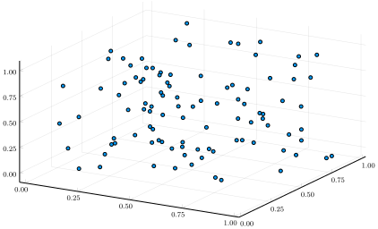
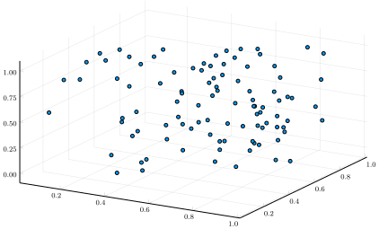

Reconstructions/embeddings
What are embeddings?
If you haven't heard about state space reconstructions (SSR), or embeddings, visit the Wikipedia page on Takens' theorem.
Simple examples
For those familiar with SSR, performing reconstructions is easy as pie. The constructors accept arrays, vectors of vectors, vectors of SVector, SArray, and Dataset instances from DynamicalSystems.jl.
The constructors accept both column-major arrays (points are column vectors) and row-major arrays (points are rows) arrays. Upon embedding, they are all converted to column-major format.
First, some trivial examples.
julia> using StateSpaceReconstruction, StaticArrays, DynamicalSystems
Simulate a three-dimensional orbit consisting of 100 points. We'll represent the orbit as a regular array, as an SMatrix and as a Dataset.
julia> A = rand(3, 100)
3×100 Array{Float64,2}:
0.143569 0.194715 0.519791 0.515948 … 0.771841 0.749099 0.929886
0.716077 0.389791 0.544723 0.995461 0.362778 0.693998 0.265874
0.262664 0.132854 0.00861606 0.757813 0.905783 0.31555 0.448698
julia> S = SMatrix{3,100}(A)
3×100 StaticArrays.SArray{Tuple{3,100},Float64,2,300}:
0.143569 0.194715 0.519791 0.515948 … 0.771841 0.749099 0.929886
0.716077 0.389791 0.544723 0.995461 0.362778 0.693998 0.265874
0.262664 0.132854 0.00861606 0.757813 0.905783 0.31555 0.448698
julia> D = Dataset(A)
100-dimensional Dataset{Float64} with 3 points
0.143569 0.194715 0.519791 0.515948 … 0.771841 0.749099 0.929886
0.716077 0.389791 0.544723 0.995461 0.362778 0.693998 0.265874
0.262664 0.132854 0.00861606 0.757813 0.905783 0.31555 0.448698
Embed the raw orbits, performing no coordinate lagging.
julia> E_A = embed(A)
StateSpaceReconstruction.Embeddings.Embedding{3,Float64} with 100 points

Dataset instances from DynamicalSystems.jl can also be embedded.
julia> E_D = embed(D)
StateSpaceReconstruction.Embeddings.Embedding{3,Float64} with 100 points
Instances of SMatrix work just as well.
julia> E_S = embed(S)
StateSpaceReconstruction.Embeddings.Embedding{3,Float64} with 100 points
Verify that all three embeddings are the same, regardless of which data type we're starting from.
julia> E_A == E_D == E_S
true
Full control over the embedding
One can also specify exactly how the variables of the data should appear in the final embedding, and which embedding lag should be used for each variable. Each variable of the data can appear multiple times in the final embedding with different lags.
julia> using StateSpaceReconstruction, StaticArrays, DynamicalSystems
julia> using StateSpaceReconstruction, StaticArrays, DynamicalSystems
julia> A = rand(3, 100)
3×100 Array{Float64,2}:
0.331512 0.354908 0.394991 0.67605 … 0.850526 0.608729 0.59208
0.493362 0.0636469 0.931318 0.108762 0.283904 0.805373 0.000359184
0.31378 0.441511 0.153857 0.543784 0.0210865 0.173419 0.692074
julia> S = SMatrix{3,100}(A)
3×100 StaticArrays.SArray{Tuple{3,100},Float64,2,300}:
0.331512 0.354908 0.394991 0.67605 … 0.850526 0.608729 0.59208
0.493362 0.0636469 0.931318 0.108762 0.283904 0.805373 0.000359184
0.31378 0.441511 0.153857 0.543784 0.0210865 0.173419 0.692074
julia> D = Dataset(A)
100-dimensional Dataset{Float64} with 3 points
0.331512 0.354908 0.394991 0.67605 … 0.850526 0.608729 0.59208
0.493362 0.0636469 0.931318 0.108762 0.283904 0.805373 0.000359184
0.31378 0.441511 0.153857 0.543784 0.0210865 0.173419 0.692074
Embed the orbits, this time using coordinate lagging. Now, let $x$, $y$ and $z$ be variables 1, 2 and 3 of the dataset A. We'll create embeddings of the form $E = {(x(t+1), x(t), y(t), y(t-1), z(t))}$. This means we will have to specify which variable will appear as which variables in the final embedding.
julia> which_pos = [1, 1, 2, 2, 3]
5-element Array{Int64,1}:
1
1
2
2
3
julia> embed_lags = [1, 0, 0, -1, 1]
5-element Array{Int64,1}:
1
0
0
-1
1
Using these positions and lags, we'll get 5-dimensional embeddings. In the plots below, the first three coordinate axes are plotted.
julia> E_A = embed(A, which_pos, embed_lags)
StateSpaceReconstruction.Embeddings.Embedding{5,Float64} with 98 points

julia> E_D = embed(D, which_pos, embed_lags)
StateSpaceReconstruction.Embeddings.Embedding{5,Float64} with 98 points
julia> E_S = embed(S, which_pos, embed_lags)
StateSpaceReconstruction.Embeddings.Embedding{5,Float64} with 98 points
Verify that all three embeddings are the same, regardless of which data type we're starting from.
julia> E_A == E_D == E_S
true